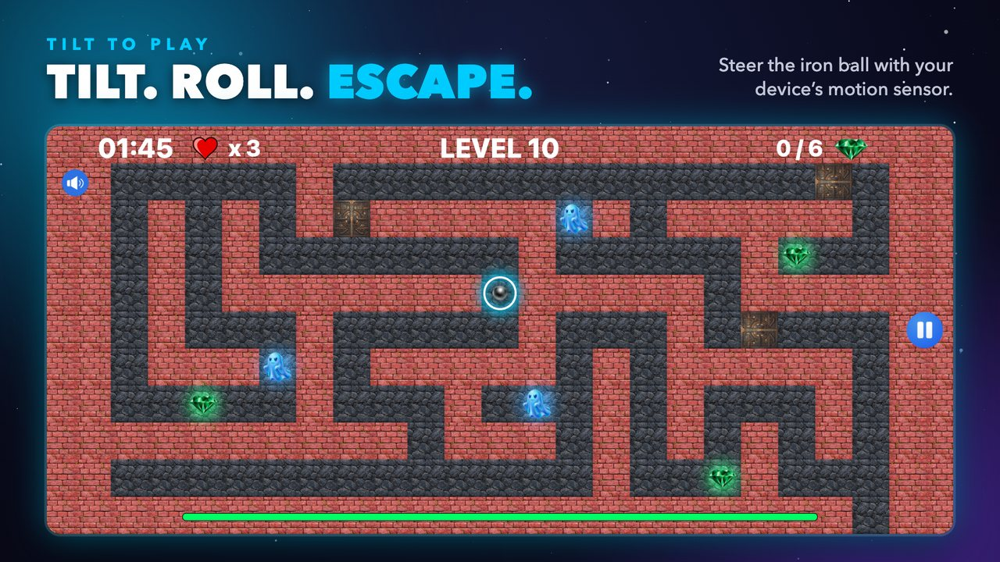
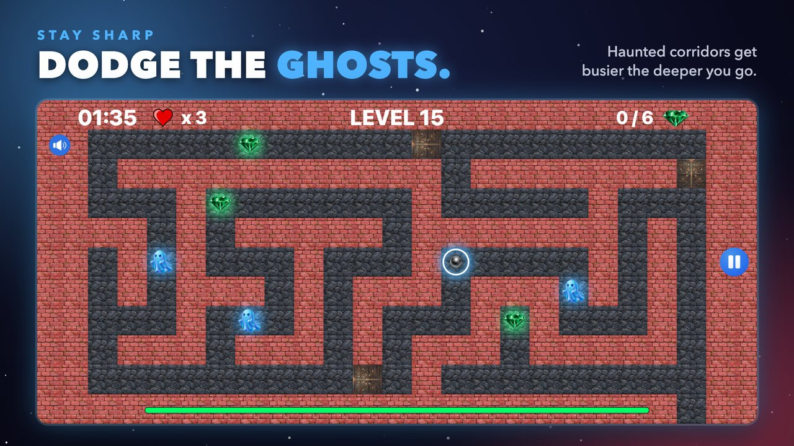
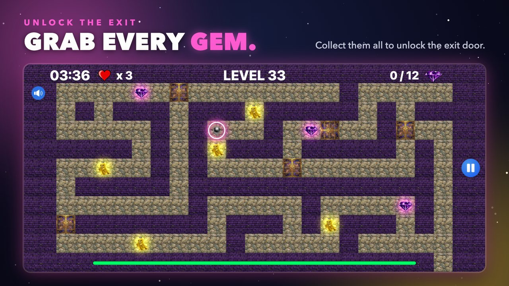
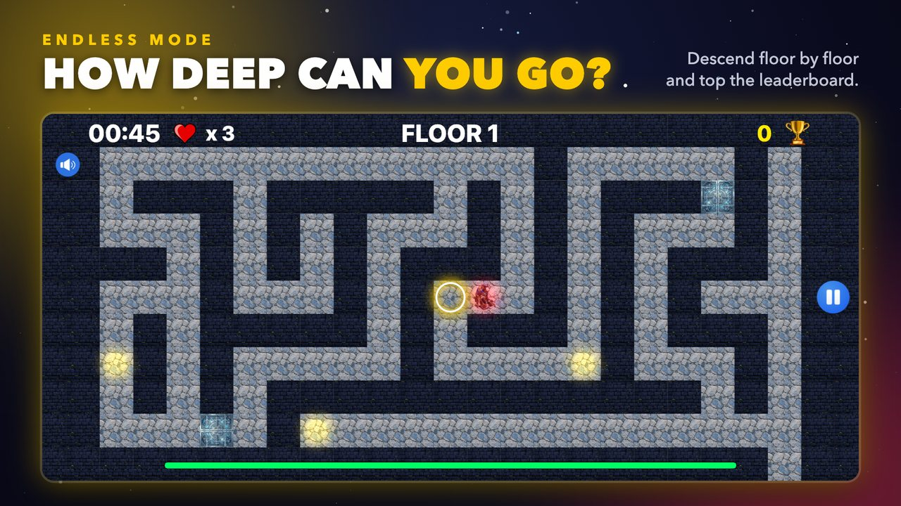

Eğ, yuvarla ve kaç!

iPhone ve iPad · Android telefon ve tabletler · Ücretsiz
Oyun hakkında
Ferroll, iPhone, iPad ve Android için fizik tabanlı bir labirent oyunu. Hareket etmek için ekrana dokunmazsın; cihazını eğersin ve demir top gerçek bir ivmeyle yuvarlanır. Sürttüğün her duvar, fazla hızlı aldığın her köşe sana zaman kaybettirir.
Çıkış kapısını açmak için labirente dağılmış elmasları topla, sonra süre bitmeden kapıya ulaş. Tuzaklar kendi ritimlerinde açılıp kapanır, hayaletler koridorlarda devriye gezer. Zamanlamayı öğren ya da yakalan.




Her biri kendi duvarları, hayaletleri, elmasları ve tuzaklarıyla beş farklı dünya. İlerledikçe labirentler büyür.
Hiç bitmeyen bir labirentte kat kat aşağı in. Her elmas 5 saniye ve 50 puan kazandırır.
En iyi sonsuz mod skorun iPhone ve iPad'de Game Center'a, Android'de Google Play Games'e gönderilir.
Yıldızlar ne kadar hızlı bitirdiğine ve kaç kez öldüğüne bağlı. Kusursuz geçişler en iyi süreyi kaydeder.
Canın mı bitti? Her 20 dakikada bir can geri gelir, en fazla üç cana kadar. 1.5 sürümüyle geldi.
İngilizce, Türkçe, İspanyolca, Almanca, Fransızca, Japonca ve Çince dahil tamamen yerelleştirildi.
Gereksinimler
| iPhone ve iPad | Android | |
|---|---|---|
| Sistem | iOS / iPadOS 17.0 veya üzeri | Android 7.0 veya üzeri |
| Cihazlar | iPhone ve iPad | Telefon ve tabletler |
| Liderlik tablosu | Game Center | Google Play Games |
| Ekran yönü | Yatay | |
| Kontroller | Cihazı eğerek (hareket sensörü gerekli) | |
| Fiyat | Ücretsiz, isteğe bağlı uygulama içi satın almalarla | |
Yardım mı lazım?
Bir bölümde mi takıldın, bir satın alman mı görünmüyor ya da bir hata mı buldun? Destek sayfası iki platformdaki en sık soruları yanıtlıyor; bize her zaman Instagram'dan @dev.yagiz hesabıyla da ulaşabilirsin.